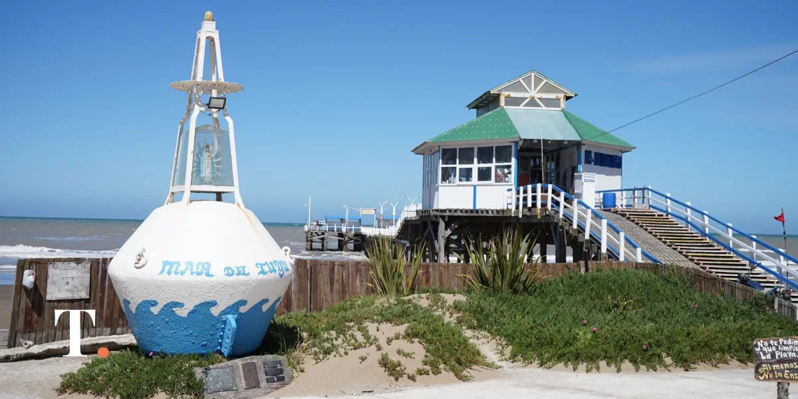
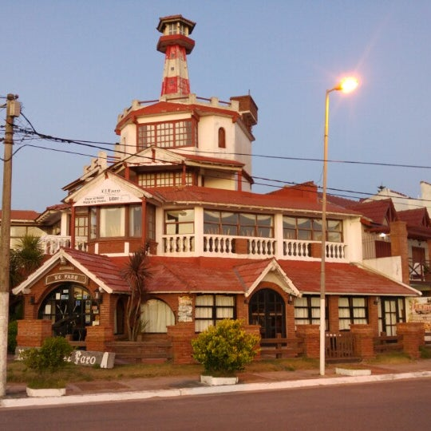

La localidad es la cabecera del Partido de la Costa a partir de 1978, fecha en la que se separó del Partido de General Lavalle. La fecha de fundación es el 24 de octubre de 1945, ubicándose en las tierras que Arturo de Elías le compró a la familia Duhau. Ese día la Dirección de Geodesia de la provincia de Buenos Aires aprobó los planos de la ciudad. Posteriormente a este acto se procedió a la subasta pública. Sin embargo los planos fueron aprobados bajo la vigencia de la ley 3487 del año 1913 que no contemplaba la creación de localidades costeras y no tenían en cuenta las características morfólogicas del terreno

Tiene 140 m de largo y 4 metros de ancho; con un morro de 20 x 20 m para pescar. De madera dura traída del norte, con altura variable de 4 a 6 m en la superficie, ya que todos los pilotes fueron enterrados a 7 m de profundidad. Tiene alumbrado público, alquiler de cañas, mediomundos, carnada y baños públicos.

Ubicado en la calle 69 y 1, sobre la azotea de un edificio que le permite estar a 25 m de altura, su luminosidad alcanza una distancia de 36 km; es de suma importancia para la navegación costera y especialmente para los barcos pesqueros.